Layout-jump audit: cashu.me native (iOS + Android)
1. Summary
The suspicion about Android "enter an amount and hit next" is confirmed, and the same pattern exists on iOS.
On both platforms the amount-entry screens hide the mint selector row the moment the primary action is tapped
(while the request is in flight). The row is removed with a plain if, so the hero amount re-centres and drops
by 28–64 dp in a single frame, then pops back up when the row returns for the exit fade. This happens in
Receive Lightning ("Create invoice") and Send Ecash ("Send") on Android (A2, A3) and in
Receive Lightning on iOS (I3).
The second large class is container jumps around the Send flow: on Android the compact Send sheet snaps to full height in one frame when a destination resolves (A1, title moves 749 px with no in-between frame); on iOS the Send sheet is dismissed and a new one presented, so the wallet home is fully visible for about 0.6 s between the two faces (I1).
Third, two face swaps that are meant to be cross-fades land as single-frame cuts on iOS: the quote arriving on the Send confirm step (I2) and the keypad → invoice swap in Receive Lightning (I3). Android cross-fades both of these correctly.
Everything else is smaller: a one-frame scrim, a one-frame status-line flicker, and the onboarding handoff showing the wallet for 150 ms before the curtain covers it.
Update, same day: eleven of the sixteen findings are fixed on this branch and re-verified on the Pixel 7a and the iOS simulator; see section 8. The five left open are either library behaviour (A7), a deliberate navigation design on iOS (I1), or cosmetic (I5, I6); A10 needed no change.
Device check: the same release build was then run on a Pixel 7a (Android 17) and recorded at 90 fps. Rendering is healthy there (2–5 % janky frames, p50 12–14 ms), so the emulator slowness noted in A10 is an emulator artefact. The jumps themselves reproduce on the phone exactly as on the emulator: A1, A2, A4 and A8 were re-captured on hardware (section 4).
Second pass, 2026-10-22 (ecash + transfer): the branch now sits on top of the mint-transfer branch (PR #404), and the audit was extended to generating ecash, pasting and claiming a token, and the new Transfer flow on both platforms. Eleven more findings (A12–A16, I7–I12), ten fixed and re-verified on the Pixel 7a and the simulator, one left open (I12); see section 9. One of them (I9) is the first pass's I3 coming back on the merged branch, with a more robust fix. The transfer flow itself moves cleanly on both platforms; its only blemish was a popping header chevron on Android.
2. All findings at a glance
| ID | Platform | Flow · step | What jumps | Size | Severity | Status |
|---|---|---|---|---|---|---|
| A1 | Android | Send · destination resolves → amount face | Compact sheet becomes full height with no height animation; header/To row appear instantly | title 749 px, field 306 px in 1 frame | High | Fixed |
| A2 | Android | Receive Lightning · Create invoice | Mint selector row removed while creating; amount drops, then pops back before the QR face | +77 px (28 dp), 1 frame; reverts 0.4 s later | High | Fixed |
| A3 | Android | Send Ecash · Send | Both selector rows removed while sending; amount drops, then pops back before the token face | +176 px (64 dp), 1 frame; reverts 0.4 s later | High | Fixed |
| A4 | Android | Send · Continue → quote → confirm | Back chevron and pinned "To" row vanish during the quote wait; hero amount sits 117 dp lower and smaller on the confirm face | 321 px, cross-faded | Medium | Fixed |
| A5 | Android | Send · destination field wraps | Compact sheet re-measures and snaps taller | 66 px (24 dp), 1 frame | Low | Fixed |
| A7 | Android | History · transaction detail sheet | Scrim reaches full opacity in one frame while the sheet is still sliding | 1 frame | Low | Open |
| A8 | Android | Receive Lightning · payment arrives | Status line flips "Adding to wallet…" → "Expires in 9m 59s" for one frame before the success face | 1 frame (~50 ms) | Low | Fixed |
| A9 | Android | Onboarding · Add mint → wallet | Wallet home shows through for ~150 ms, fades out, curtain holds 2 s, wallet fades in again | double reveal | Medium | Fixed |
| A10 | Android | Any screen with blur (API 31+) | Emulator renders 1–3 frames per transition on API 36; same build is 60 fps on API 29. Checked on a Pixel 7a: not an issue on hardware | emulator only | Closed | n/a |
| A11 | Android | Onboarding · Create Wallet | Caution + checkbox accessory slides in from off-screen left and is clipped by the screen edge | ~150 ms | Low | Fixed |
| A12 | Android | Send Ecash · token face, polling gives up | "Checking…" row removed outright; the Unit/Mint rows below hop up | 96 px (36 dp), 1 frame | Low | Fixed |
| A13 | Android | Receive · tap the token field | Sheet re-anchors to the keyboard inset before the keyboard has started to move: the whole compact sheet jumps to the top in one frame, then the keyboard slides in beneath it | 760 px (290 dp), 1 frame | High | Fixed |
| A14 | Android | Receive · token wraps while typing | Field grows a line at a time with no height animation; Scan/Ecash/Bitcoin rows hop down | 1 line per hop | Low | Fixed |
| A15 | Android | Receive / Send · token → claim page | Keyboard stays over the home screen ~1 s after the sheet has gone, then vanishes in one frame as the claim page enters | 19 % of pixels, 1 frame | Medium | Fixed |
| A16 | Android | Transfer · Continue / Back | Header back chevron pops in and out (the header composable is swapped, not animated) | 1 frame | Low | Fixed |
| I1 | iOS | Send · destination resolves → amount face | Send sheet is dismissed and a new sheet presented; wallet home fully visible in between | ~0.6 s of home | High | Open |
| I2 | iOS | Send · Continue → quote → confirm | "Processing…" → confirm face is a single-frame cut; To row and chevron snap back | 8.2 % of pixels, 1 frame @60 fps | High | Fixed |
| I3 | iOS | Receive Lightning · Create invoice | Toolbar chips and "To Testnut mint" removed instantly, amount drops; 0.46 s later keypad → invoice is a cut | +84 px (28 pt); 23.7 % cut | High | Fixed |
| I4 | iOS | Receive Lightning · payment arrives | QR face vanishes in one frame; success face then materialises over 0.5 s | 28 % of pixels, 1 frame | Medium | Fixed |
| I5 | iOS | Onboarding · Continue → wallet | Mint list vanishes in one frame before the curtain, then the wallet fades in | 8.4 % + 4.3 % | Low | Open |
| I6 | iOS | Mints · mint detail | Async rows (connection, about text) reflow the page after the push | content load | Low | Open |
| I7 | iOS | Send Ecash · Send → token face | Keypad → token face is a single-frame cut (the wallet publishes balance/history in the same run-loop pass as the landing) | 31 % of pixels, 1 frame | High | Fixed |
| I8 | iOS | Send Ecash · token claimed | Token face → "Claimed" success is a cut, same cause | 24 % of pixels, 1 frame | Medium | Fixed |
| I9 | iOS | Receive Lightning · Create invoice (merged branch) | The invoice face lands as a cut again, on Testnut and on the local mint; the paid face cuts on the local mint. I3's fix races the wallet's History reload | 22 % / 29 %, 1 frame | High | Fixed |
| I10 | iOS | Mints · Add mint completes | Keyboard vanishes in one frame while the sheet is still in place, then the sheet dismisses | 17 % of pixels, 1 frame | Low | Fixed |
| I11 | iOS | Receive Lightning · quote refresh while the invoice shows | QR modules turn grey for one frame when a status poll replaces the quote (two images cross-dissolve) | 12 % of pixels, 1 frame | Low | Fixed |
| I12 | iOS | Send / Receive · multi-line paste into the compact sheet | The content-fit detent takes its new height in one frame when a four-line token is pasted | ~27 pt, 1 frame | Low | Open |
3. Android findings
Captured on the release build (R8) on an API 29 emulator, Pixel 5 profile, 1080×2340 at 440 dpi (2.75 px/dp), light theme (the AVD ignored the night-mode switch). See method for why API 29.
A1 · Send: the compact sheet snaps to full height when a destination resolves High
- Repro
- Home → Send → type or paste a destination that needs an amount (amountless BOLT12 offer used here). The input face auto-advances to the amount face.
- Observed
- Frame 235 → 236 (50 ms apart): the sheet goes from its compact height to full height with no in-between frame. The "Send" title moves 749 px up, the destination field 306 px. The back chevron and the "To …" row appear in the same frame. Only after that does the input face fade out and the amount face slide in.
- Measured
- title y=990 → 241; field y=1212 → 906; next 4 frames: shared-axis face swap (animated).
- Cause
UnifiedSendScreen.kt:643-644flipsprefersCompactSheetwhen the step leavesInput;CashuApp.kt:308/590passes it ascompactContent, andWalletFlowSheetHostswitches the content fromfillMaxWidth()tofillMaxHeight(). Material 3ModalBottomSheetre-anchors to a new content height with a snap, not an animation. The header swap (FlowSheetTitle→SheetHeaderwith chevron) and the "To" row are also plainifs on the step.- Suggested fix
- Keep the sheet full height from the moment a destination is pasted and let the content animate (or animate the content height with
animateContentSizeon a wrapper so the sheet's anchor interpolates); fade the chevron/To row in with the face swap instead of switching them on the same recomposition.
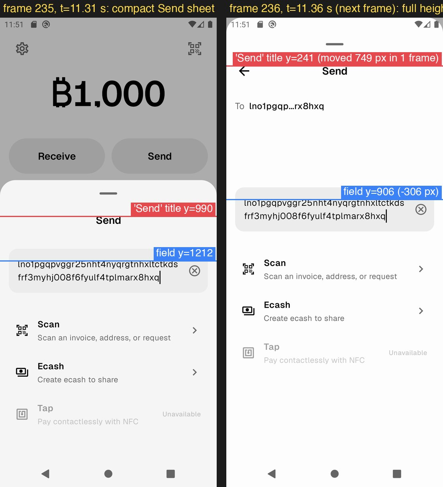
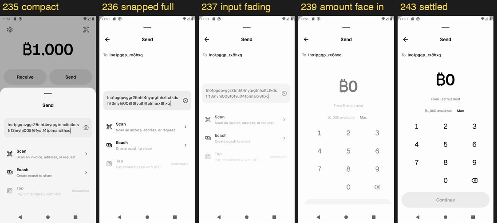
A2 · Receive Lightning: "Create invoice" removes the mint row, the amount drops, then pops back High
- Repro
- Home → Receive → Bitcoin → type 1000 → Create invoice.
- Observed
- On the tap, the "To Testnut mint" row disappears and the hero amount drops 77 px (28 dp) in a single frame. About 0.4 s later, as the keypad face starts its exit fade, the row comes back and the amount pops up again; then the invoice face fades in. The user sees the amount bounce down and up around the transition.
- Measured
- amount top y=651 → 728 (frame 325 → 340), back to 651 at frame 344, keypad rows unchanged.
- Cause
ReceiveLightningScreen.kt:1365:if (!creating && mint != null) { AmountEntryMintSelector(…) }inside the weight-balanced column ofInputFace. Removing the row re-balances the twoSpacer(weight(1f))s around the hero. When the quote lands,creatingflips back to false while the outgoing face is still composed for its exit, so the row returns mid-transition.- Suggested fix
- Keep the selector composed while creating (disable it instead of removing it), or wrap it in
AnimatedVisibilitywith the hero in a fixed-height slot so its presence never moves the amount.
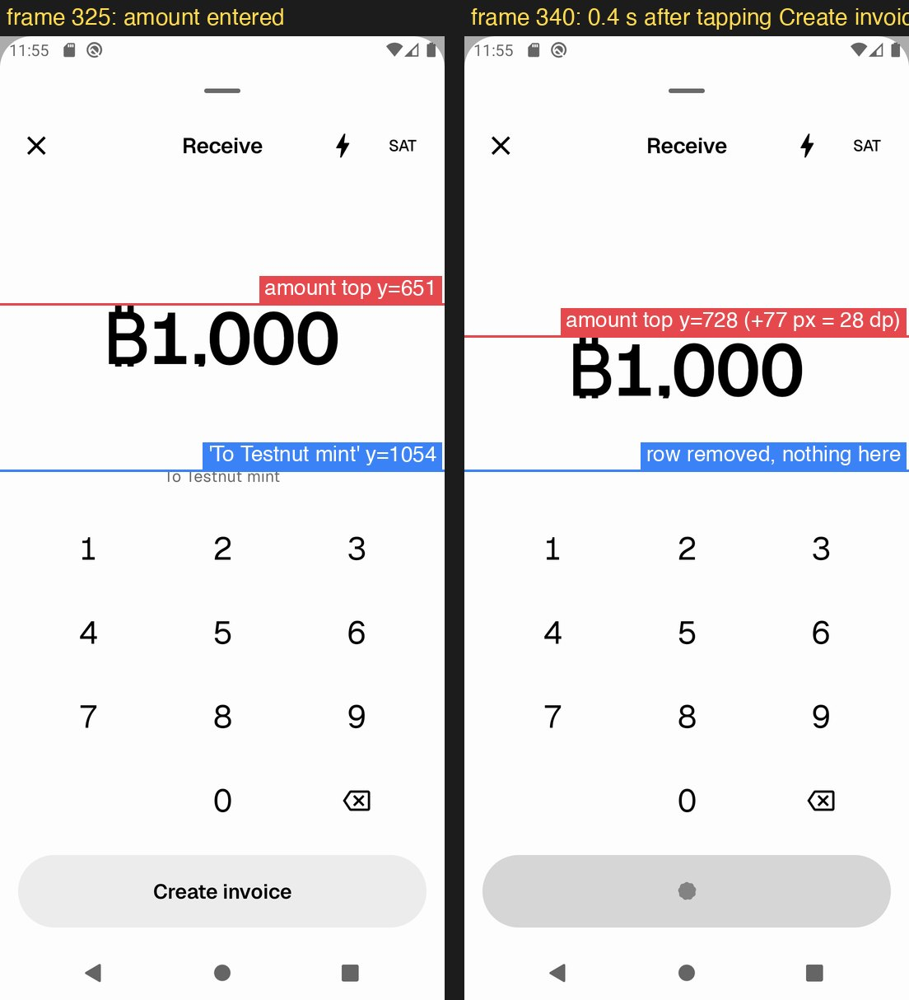
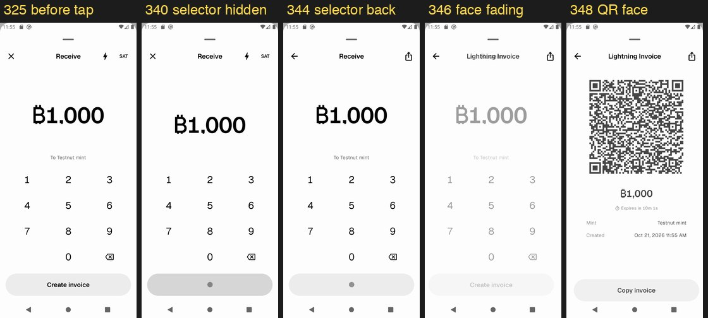
A3 · Send Ecash: "Send" removes both selector rows, the amount drops 64 dp, then pops back High
- Repro
- Home → Send → Ecash → type 50 → Send.
- Observed
- Same mechanism as A2, with two rows ("From Testnut mint" and "₿1,976 available · Max"), so the drop is larger: 176 px (64 dp) in one frame, restored 0.4 s later as the face exits, then the token face fades in.
- Measured
- amount top y=541 → 717 (frame 96 → 97), back to 541 at frame 100.
- Cause
SendEcashScreen.kt:711:if (!sending && activeMint != null) { AmountEntryMintSelector(…) }.- Suggested fix
- As A2. Unified Send's amount face (
UnifiedSendScreen.kt:1271) keeps its selector composed during Continue and does not jump, so it is the reference implementation.
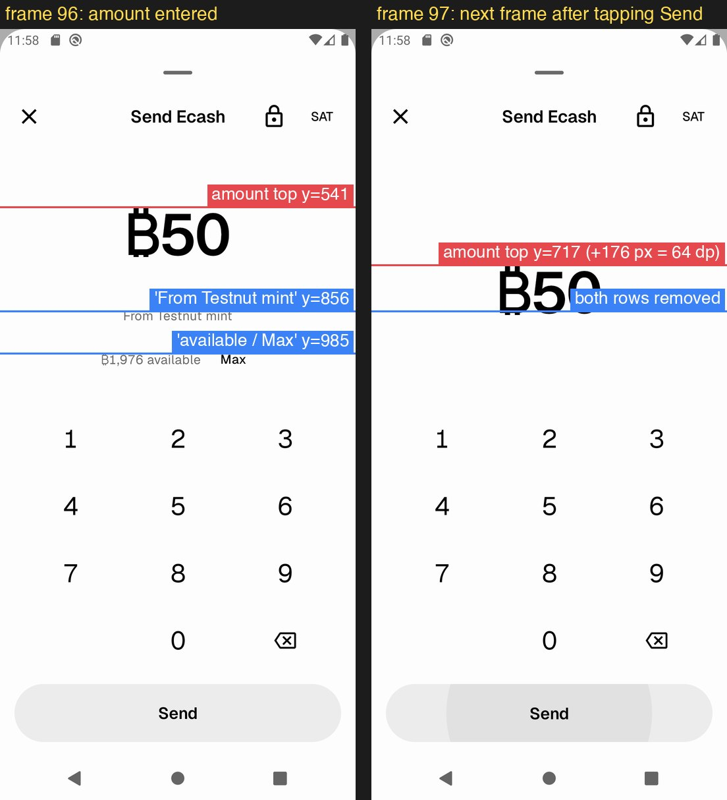
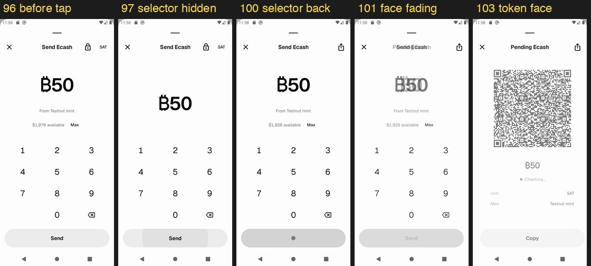
A4 · Send: Continue hides the chrome during the quote wait; the hero changes position between faces Medium
- Repro
- Send → amount face → Continue.
- Observed
- While the melt quote is fetched, the whole form (header chevron, pinned "To" row, face) is replaced by the status terminal, so the chevron and "To" row fade out and come back ~300 ms later with the confirm face. The amount itself cross-fades from the entry position to a position 321 px (117 dp) lower and at a smaller size, rather than moving. The cross-fades are fine; the jump is in the chrome and the hero position.
- Measured
- amount top y=635 (entry, 151 px tall glyphs) → 956 (confirm, 101 px tall).
- Cause
UnifiedSendScreen.kt:660-686: theunified-send-terminalAnimatedContentwraps the header and the "To" row as well as the faces, soquotePendingswaps everything. The confirm face places the hero atConfirmTopFractionof the scaffold (ConfirmFace), unrelated to where the entry hero sits.- Suggested fix
- Keep the header and "To" row outside the terminal swap (the source comment already calls the "To" row the step swap's fixed anchor); consider animating the hero from the entry position to the confirm position instead of cross-fading two positions.
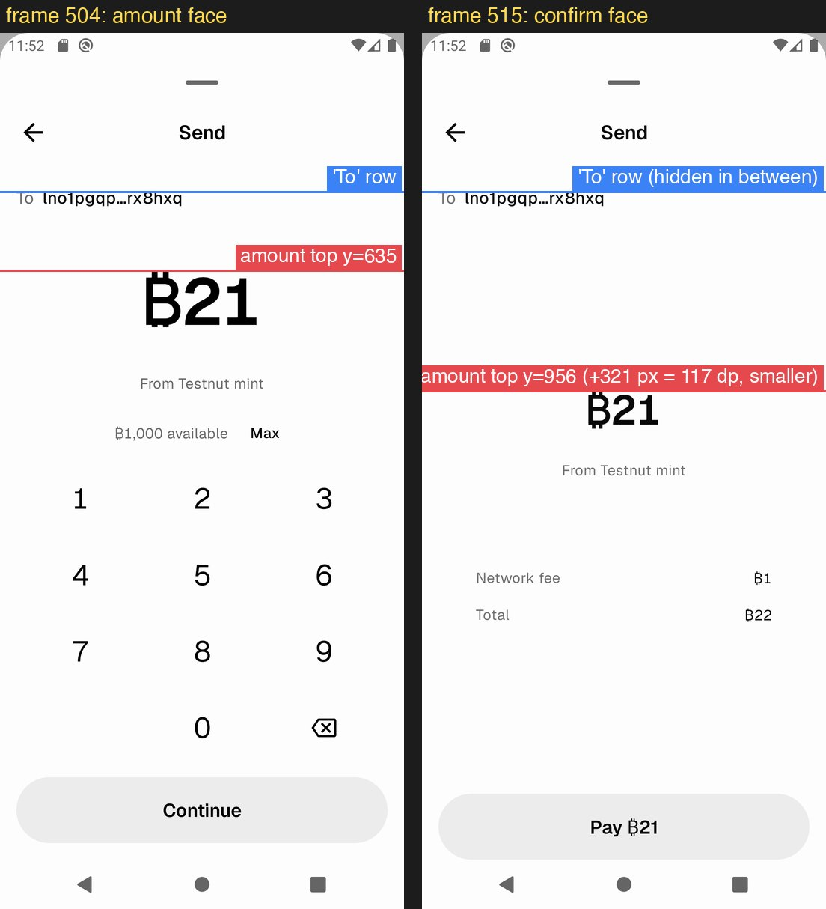
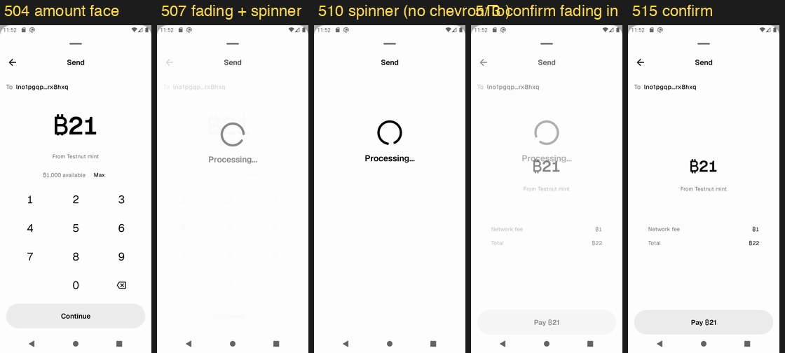
A5 · Send: the compact sheet snaps taller when the destination wraps to two lines Low
- Observed
- When the typed destination wraps, the sheet grows 66 px (24 dp) in one frame. Small, but it is the same "sheet height is not animated" mechanism as A1 and is visible while pasting long payloads.
- Suggested fix
animateContentSize()on the sheet content column, or a fixed two-line field height.
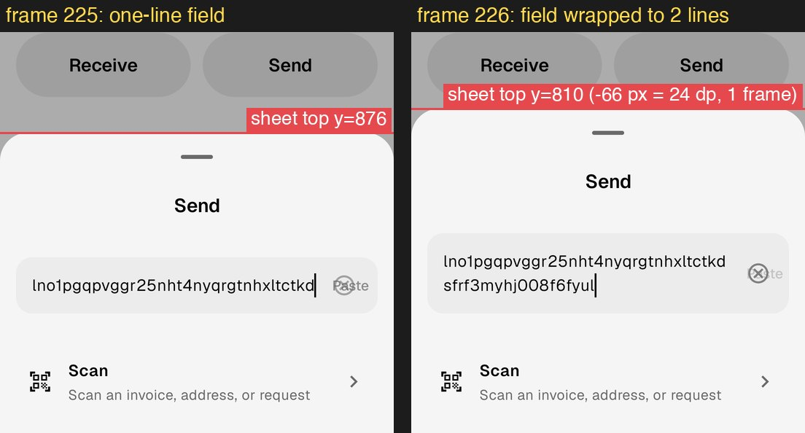
A7 · Transaction detail sheet: scrim reaches full opacity before the sheet arrives Low
History → tap a row. The scrim is at full darkness in the first frame of the transition while the sheet is still a third of the way up; the sheet itself slides over ~200 ms. The Receive/Send sheets show the same one-frame scrim.
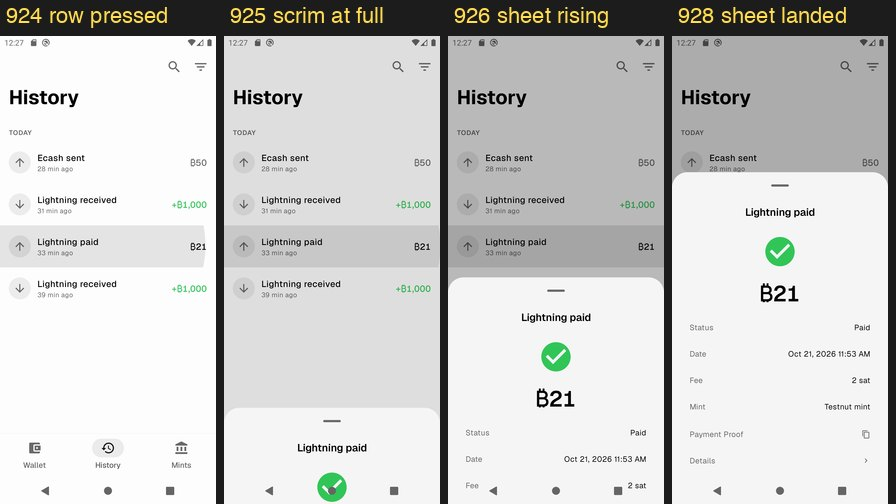
A8 · Receive Lightning: status line flickers for one frame when the payment arrives Low
The invoice face shows "Adding to wallet…", flips back to "Expires in 9m 59s" for a single frame, then fades to the success face. Cosmetic, but it reads as a glitch right at the moment of success.
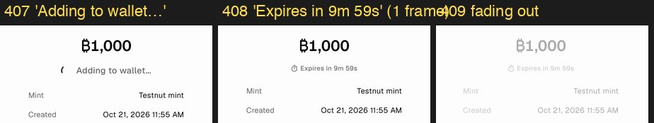
A9 · Onboarding handoff: the wallet shows through before the curtain covers it Medium
After "Add mint", the wallet home (balance, Receive/Send, empty state, tab bar) appears at partial opacity for about 150 ms,
fades out again under the ASCII-field curtain, the curtain holds for roughly 2 s, and then the wallet fades in a second time.
iOS shows the curtain first and the wallet once (I5). Suspect the curtain's fade-in starts after the
destination mounts (OnboardingHandoff.kt) rather than before it.
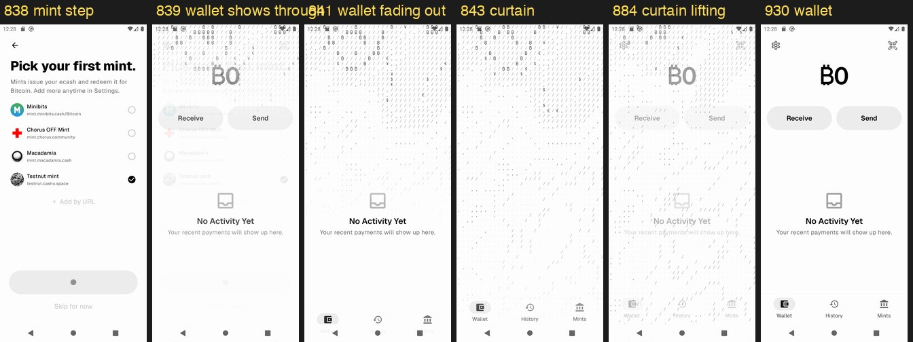
A10 · API 31+ blur effects starve the frame budget on the emulator Closed: emulator only
Checked on a Pixel 7a (Android 17, same release APK): Create Wallet rendered 150 frames at 4 % janky (p50 14 ms, p90 19 ms, p99 61 ms); Receive's Create invoice 215 frames at 3 % janky (p50 13 ms); Send's destination resolve 93 frames at 2 % janky (p50 12 ms); Continue 57 frames at 5 % janky (p50 12 ms). The blur effects cost nothing noticeable on hardware. Nothing to fix.
The first Android pass was recorded on an API 36 emulator (Pixel 8 profile, host GPU). Every app transition rendered as one
or two frames, while system animations (keyboard) ran at 60 fps. dumpsys gfxinfo during Send's Continue on the
debug build: 31 frames, 93 % janky, p50 69 ms, p90 250 ms, p99 1.5 s. The release build was no better on API 36
(Create Wallet: 27 frames, 100 % janky, p50 300 ms). The same release APK on API 29, where RenderEffect does
not exist and all blur modifiers are no-ops, rendered Create Wallet at 71 frames, 41 % janky, p50 10 ms, p90 23 ms.
The blur sites are the full-screen backdrop blur behind every flow sheet (CashuApp.kt:467,
.blur(sheetBackdropBlur)), Modifier.riseIn (Motion.kt) and
morphBlur/materializeBlur (Materialize.kt). The emulator's GL translator is slower than a
phone GPU, so this may be fine on hardware, but a full-screen blur re-rendered on every frame of a sheet animation is worth
a quick gfxinfo check on the Pixel 7a. If it is slow there, every transition in this report looks like a cut to users.
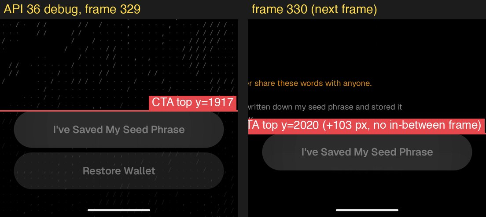
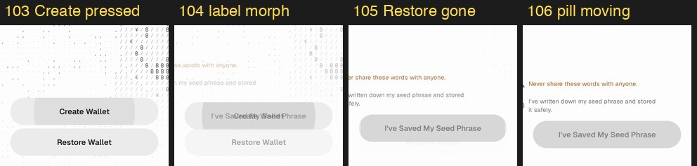
A11 · Onboarding: the caution accessory slides in from off-screen left Low
On Create Wallet, the "Never share these words" caution and the checkbox enter horizontally from beyond the left edge and are clipped for ~150 ms. iOS fades the same block in place. Looks like the shared-axis slide is applied to the chassis accessory as well as the stage content.
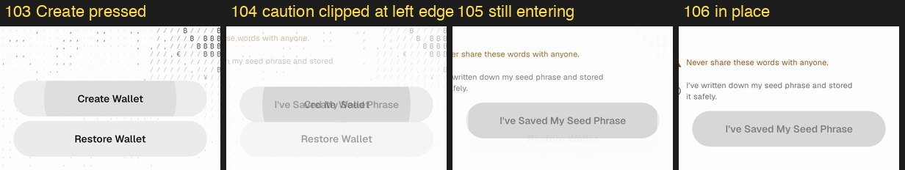
4. Pixel 7a confirmation
Same release APK on a Pixel 7a, Android 17, 1080×2400 at 420 dpi (2.625 px/dp), dark theme, recorded on the device at 90 fps. The strips below show every recorded frame around each transition; frames here are 11 ms apart.
A1 on the phone: the sheet still snaps to full height, in one 90 fps frame Confirmed
With the keyboard open the compact sheet already sits near the top, so the snap is small. Dismiss the keyboard first (Back) and the compact sheet drops to the bottom; when the destination then resolves, the sheet goes from compact to full height with no recorded frame in between (frames 185 → 187, 43 ms apart, nothing changed in between). The "Send" title moves from y=1172 to y=168 (1004 px) and the destination field from y=1384 to y=947 (437 px) in that one step.
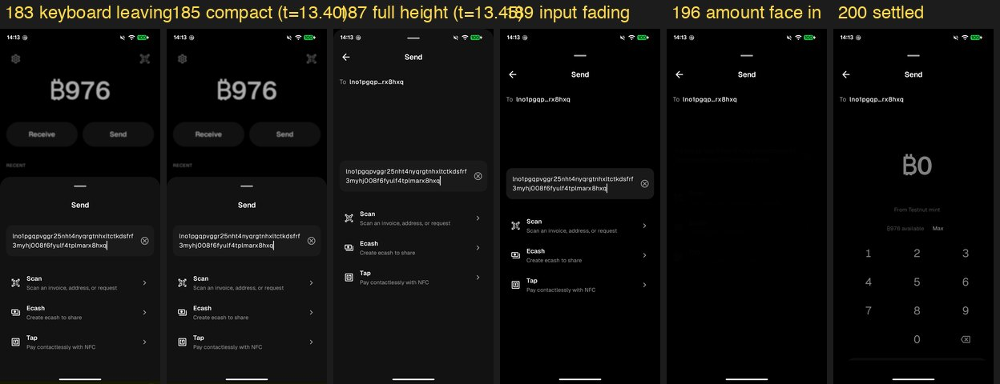
A2 on the phone: Create invoice drops the amount, then it pops back Confirmed
Frame 225 → 227: the "To Testnut mint" row is gone and the amount top moves from y=765 to y=838 (73 px = 28 dp on this density) in a single frame. It stays there for 0.3 s, pops back at frame 255 as the header swaps, then the invoice face fades in.
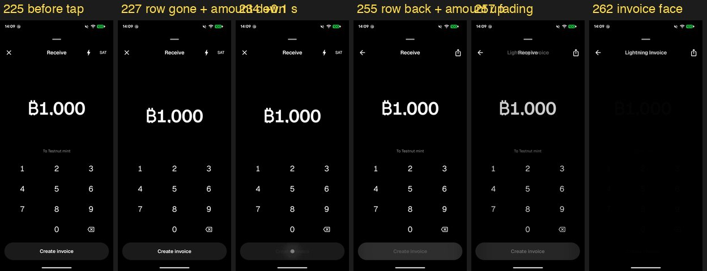
A4 on the phone: chevron and "To" row vanish during the quote wait Confirmed
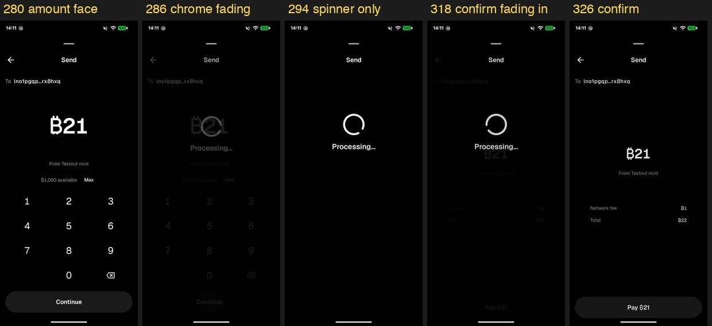
A8 on the phone: the status line flickers for two frames Confirmed
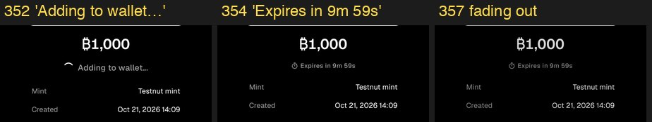
Not re-captured on the phone: A3 (same code path as A2), A5, A7, A9 and A11. The onboarding recording on the phone was interrupted by use of the device during the capture, so it was discarded.
5. iOS findings
Captured on the iPhone 17 Pro simulator, iOS 26.0, Xcode 27.1, 1206×2622 at 3× (402×874 pt), debug build, dark appearance, recorded at 60 fps.
I1 · Send: the sheet is dismissed and re-presented when a destination resolves High
- Repro
- Home → Send → type or paste an amountless destination.
- Observed
- The Send sheet drops away, the wallet home is fully visible with its tab bar for about 0.6 s, then a second sheet rises with the amount face. Timeline: sheet dismissing at 283.26 s, home only 283.34–283.92 s, new sheet rising 283.96–284.20 s.
- Cause
MainWalletView.swift:680-681:onRoutePaymentcallsnavigationManager.present(.sheet(.sendAmount(…))).NavigationManager.presentparks the surface, dismisses the open sheet and presents the parked one fromonDismiss.WalletSheet.idhashes the destination into the identity ("A new destination is a new sheet, never a stale one re-shown"), so SwiftUI cannot morph the open sheet in place.- Suggested fix
- Route the resolved destination into the already-open Send sheet (the
.send(prefill:)case keeps a stable id for exactly this reason) and advance its step with the existing shared-axis animation; reserve the dismiss-then-present path for surfaces that really are different (camera, full-screen claim).
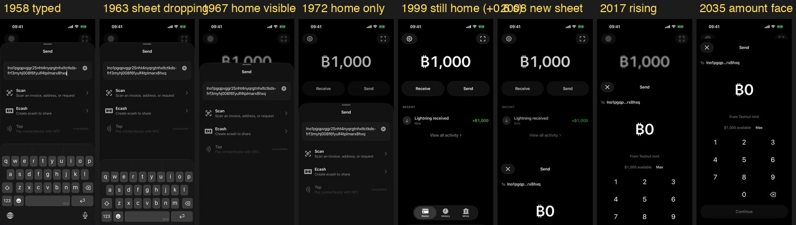
I2 · Send: the confirm face lands as a single-frame cut after the quote High
- Repro
- Send → amount face → Continue.
- Observed
- The amount face fades to the "Processing…" spinner correctly. When the quote arrives, the spinner is replaced by the confirm face (amount, fee rows, Pay button) in one 60 fps frame (8.2 % of pixels change between frames 2184 and 2185, 8 ms apart, with nothing changing on either side). The dimmed "To" row and the chevron snap back to full opacity in the same frame.
- Measured
- spinner top y=739 → amount top y=1007; entry-face amount was at y=755, so the hero also ends 84 pt lower than where it was typed.
- Cause
SendView.swift:2239setsmeltQuote = quoteand:2215clearsisWorkingin adefer, both outside anywithAnimation. Only the error path (:2245) is animated. The rule from the Transfer fix on 2026-10-18 applies here: a body-read state change outsidewithAnimationin the same update turns the face swap into a cut.- Suggested fix
- Apply the quote and clear
isWorkinginside onewithAnimation(.smooth(duration: 0.3)); the Transfer screen already does this.
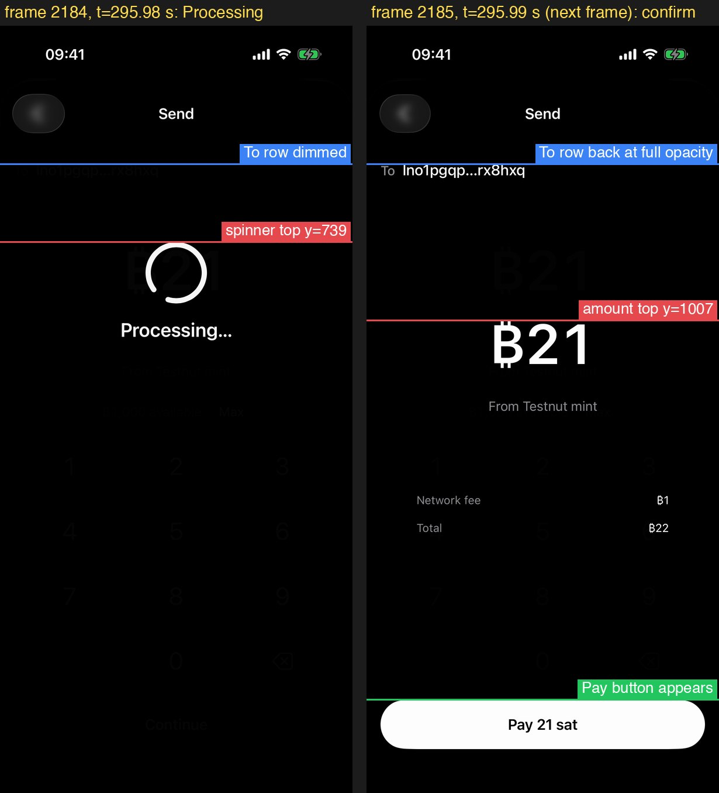
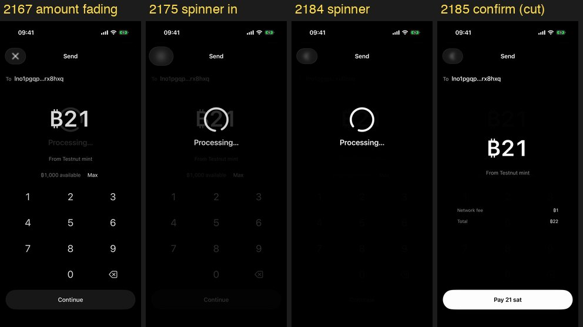
I3 · Receive Lightning: "Create invoice" drops the amount, then cuts to the invoice face High
- Repro
- Home → Receive → Bitcoin → type 1000 → Create invoice.
- Observed
- Two jumps. (1) On the tap, the toolbar method/unit chips and the "To Testnut mint" row are removed instantly and the amount re-centres 84 px (28 pt) lower. (2) 0.46 s later the keypad face is replaced by the invoice face (QR, amount, expiry, Copy invoice) in one frame; 23.7 % of pixels change between frames 1532 and 1533.
- Cause
ReceiveLightningView.swift:179and:203gate the toolbar items on!isCreatingRequest,:472gates the "To" row, and:1152setsisCreatingRequest = truewith no animation. The quote landing that swaps the face is likewise applied outsidewithAnimation.- Suggested fix
- Keep the chips and the "To" row in place (disabled) while creating, or animate their removal; wrap the quote assignment in
withAnimationso the face swap uses its.transition(.opacity).
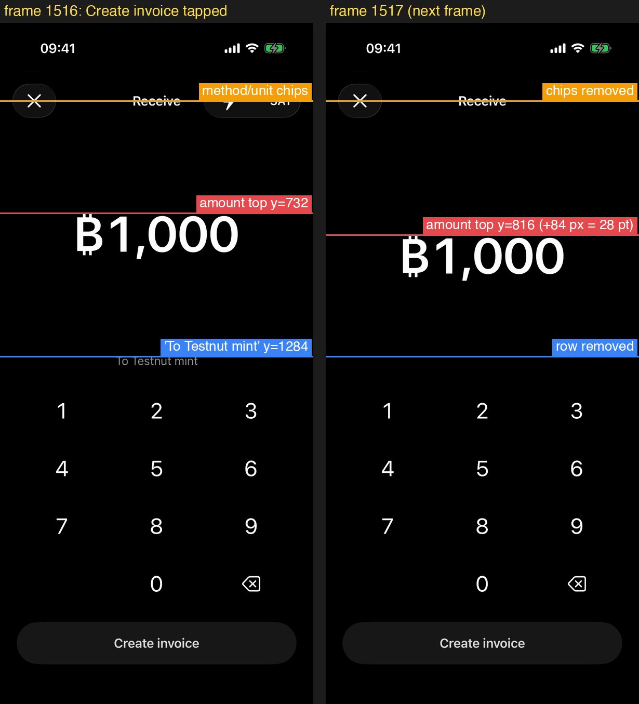
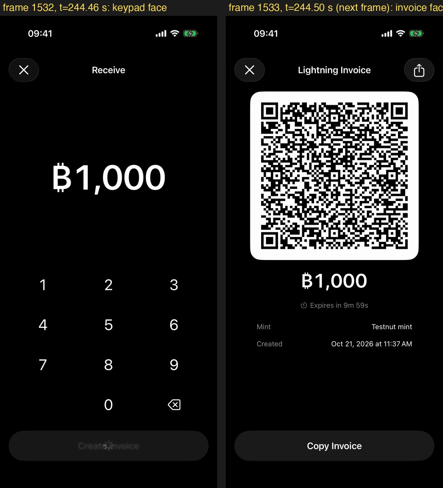
I4 · Receive Lightning: the QR face vanishes in one frame when the payment arrives Medium
The invoice face disappears in a single frame (28 % of pixels, frame 1581), the screen is blank for two frames, then the green check materialises and "Payment Received!" fades in over about 0.5 s. The entrance is choreographed; the exit is a cut. Android fades the invoice face out over three frames here.
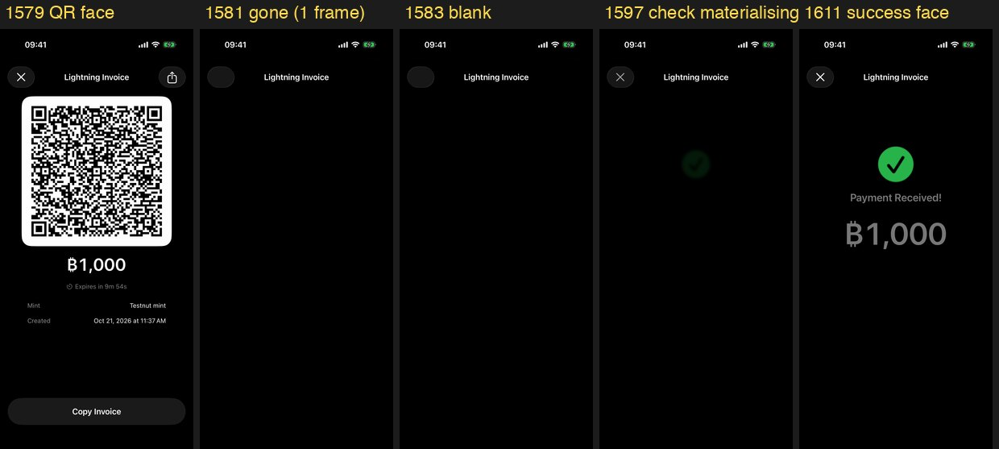
I5 · Onboarding handoff: the mint list is removed in one frame before the curtain Low
Continue on the mint step: the title, list and buttons vanish in one frame (8.4 % of pixels), a second step 0.23 s later removes the rest (4.3 %), the ASCII field holds, and the wallet fades in over 1.3 s. If the cut to the curtain is intentional it is fine; if the content was meant to fade under the curtain, it does not.
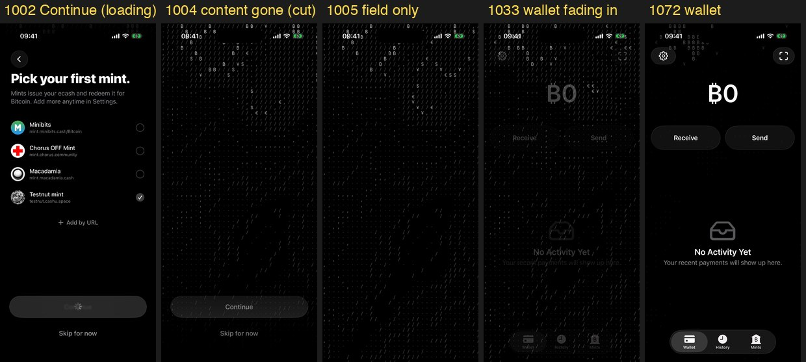
I6 · Mint detail: rows reflow as async data lands Low
After the push, "Balance (USD)" goes from "…" to "$0.00", "Connection" from "Checking…" to "Online", and the About text grows from one line to the full description, pushing "Message from the mint" and "Capabilities" down without animation. Android's mint detail shows the same loading reflow. Reserving the final heights (or animating them) would stop the page settling in steps.
6. Transitions that looked right
Android (API 29, release): Receive and Send sheet presentation; Receive sheet → Bitcoin growth and face swap (shared axis, no jump); keypad entry; Continue → spinner → confirm cross-fades; Pay → "Processing…" → "Payment sent" morph; tab fade-through; mint detail push/pop and settings push/pop; onboarding Create → seed (chassis pill springs, label morphs), seed → mint, keyboard show/hide on the mint URL step (23 frames at 60 fps on API 36).
iOS: onboarding Create → seed (pill moves ~48 pt over ~150 ms, Restore fades), seed → mint, mint → URL with keyboard; Receive sheet open/close; Receive → Bitcoin; Pay → "Processing…" → "Payment Sent!" (both cross-fades land in place); tab switches; mint detail push/pop; Settings push/pop.
7. Method, environments and caveats
Each flow was driven by a script while the screen was recorded, then every recorded frame was diffed against the previous one. A transition that animates shows many small per-frame changes; a layout jump shows a single frame with a large change bracketed by still frames, or an element whose position differs between two consecutive frames with no intermediate position. Candidates were inspected on filmstrips, and element positions were measured on full-resolution frames (the y values quoted above are device pixels from those frames).
- iOS
- iPhone 17 Pro simulator, iOS 26.0, Xcode 27.1, debug build, dark appearance. Driven by a throwaway XCUITest that does not disable animations (the repo's
UITestBasedoes), recorded withsimctl io recordVideoat 60 fps. Frame times were taken from the container DTS because the PTS in the h264 output are scrambled. - Android
- Release build (R8, debug-signed) on the API 29 Google APIs emulator, Pixel 5 profile, host GPU. Driven with
adb inputand UI Automator, recorded with the emulator's host-side recorder (steady ~20 fps). A 300 ms animation therefore shows about six distinct frames; "one frame" in this report means no intermediate state was captured within 50 ms, and every such case was cross-checked against the source for a missing animation. - Why API 29
- On API 36 (and on the release build) the emulator rendered every app transition as 1–3 frames (see A10). API 29 has no
RenderEffect, so the blur modifiers are no-ops and the same APK renders at 60 fps. Blur aesthetics are therefore not covered; layout and timing are. - Wallet state
- Fresh wallets on both platforms, connected to the public Testnut mint (FakeWallet: invoices auto-pay). Send used an amountless BOLT12 offer so the amount step is exercised; the quote and payment completed against Testnut.
- Pixel 7a
- Same release APK, Android 17, dark theme, on-device
screenrecord(90 fps, frames written on change) anddumpsys gfxinfoaround each transition. Used to close A10 and to confirm A1, A2, A4 and A8 on hardware. - Not covered
- A physical iPhone; reduce-motion; large text; landscape; the restore flow; NFC; iOS onboarding's first tap was delayed ~2 min by XCUITest snapshotting the ASCII field, which froze the welcome screen during the capture but not the transition that followed.
8. Fixes on this branch
Each fix was re-captured the same way as the original finding: the Pixel 7a at 90 fps for Android, the iPhone 17 Pro simulator at 60 fps for iOS. "Animated" below means the change spreads over 10 or more consecutive recorded frames with no single frame carrying the bulk of it.
A1, A5 · Send sheet grows instead of snapping (Android) Fixed
The sheet content column now carries animateContentSize as its outermost modifier, so the Material sheet's
anchor follows an animated height instead of re-anchoring to a new one in a single frame. The container colour
(compact grey → full-height background) animates with it, in WalletFlowHost. The same modifier covers the
one-line growth when a pasted payload wraps (A5). The modifier order matters: placed inside fillMaxHeight it
animated the content while the sheet still jumped, which is what the first attempt did.
Keyboard still open when the destination resolves (typing a Lightning address, which resolves before you
put the keyboard away): the first version of this fix made the sheet rise, dip by ~320 px and rise again, because the
Material sheet includes the keyboard in its content insets, so the full-height column grew a second time as the keyboard
left and the animated height lagged behind it. The Send flow now keeps its sheet insets keyboard-blind
(WalletFlowHost passes contentWindowInsets without the IME; the input face and the connect-mint form
pad for the keyboard themselves) and hides the keyboard the moment the input face leaves, so the growth is one motion
while the keyboard slides down beside it. Re-verified on the Pixel 7a with a Lightning address: handle 300 → 176 px in
one rise, no dip, and the compact sheet still tracks the keyboard as it opens.
Back from the amount face felt slow after these changes: the sheet kept sinking for ~200 ms after the
input face had landed, and started late. Two nested size animations were chasing each other. The face container
(TwoFaceScreen) ran its own size spring on the way back and the pinned "To" row animated its own height, so
the sheet's height animation retargeted every frame instead of running one curve. The face container now snaps its size
(the sheet animates height; the faces only slide and fade), the "To" row takes and gives up its space in the same frame
as the step change and only fades its ink, and the sheet height runs the same 300 ms shared-axis curve as the faces.
Re-measured on the Pixel 7a: the sheet starts moving on the first frame after the tap and settles with the faces at
~280 ms, in both directions.
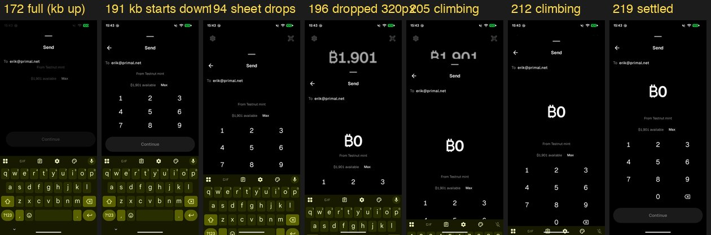
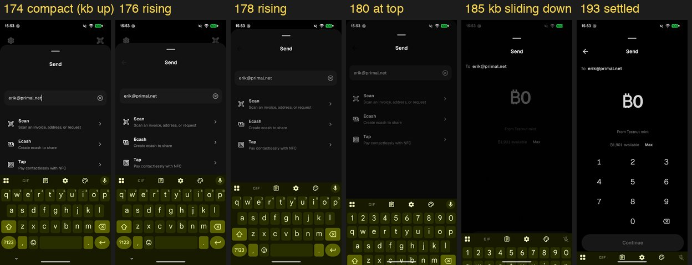
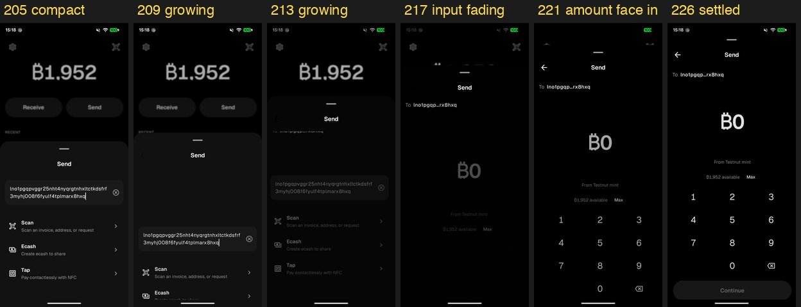
A2, A3 · Mint selector stays mounted during the request (Android) Fixed
ReceiveLightningScreen and SendEcashScreen keep the selector composed while a request is in flight
and only withdraw its picker and Max actions, so the column's weights do not change and the hero amount stays where it is.
Unified Send already worked this way and was the reference.
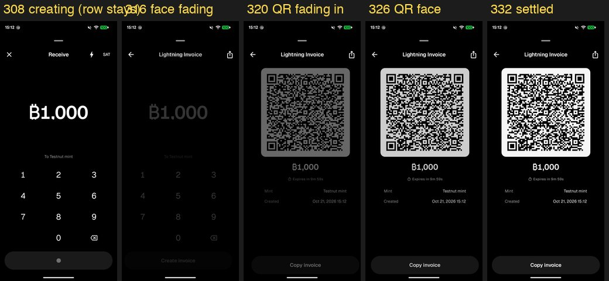
A4 · Send chrome stays through the quote wait (Android) Fixed
The sheet header and the pinned "To" row moved out of the body AnimatedContent in UnifiedSendScreen,
so the status terminal swaps underneath them. The back chevron fades in and out (SheetHeader now animates its
leading control) and the "To" row expands in once a destination is locked and shrinks out only on the final result face. The
hero's position difference between the amount and confirm faces is unchanged; it is a cross-fade between two layouts and
reads as intended now that the chrome around it holds still.
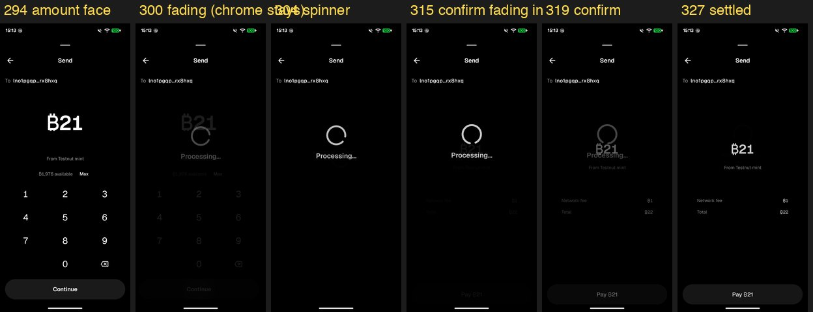
A8 · Status line no longer flickers (Android) Fixed
Once a one-shot invoice has shown "Adding to wallet…", the settlement state is latched until the success face takes over, so the frame between issuance clearing and the paid swap landing can no longer fall back to the expiry countdown.
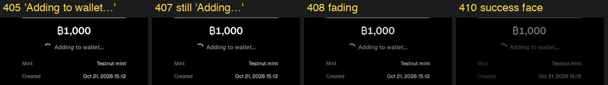
A9 · Wallet no longer shows through before the curtain (Android) Fixed
WalletManager.addMint no longer clears needsOnboarding by itself; it preserves the current value, and
the handoff's completeOnboarding() flips the gate once the curtain has full cover, as the handoff was designed
to. Outside onboarding the flag is already false, so adding a mint from the Mints tab is unaffected. Not re-captured on the
phone (the onboarding path needs a wallet reset); verified by reading the only two callers.
A11 · Chassis accessory no longer enters from off-screen (Android) Fixed
The empty branches of the chassis accessory and the chassis slots now render a zero-height, full-width spacer instead of nothing, so the size spring opens them vertically only. An empty 0×0 content made the spring grow the width from zero too, which with bottom-centre alignment entered the incoming block from beyond the left edge.
I2 · Confirm face fades in after the quote (iOS) Fixed
In SendView.fetchMeltQuote the quote, the resolved mint and isWorking are now applied inside one
withAnimation, instead of leaving the flag to the Task's defer. The error path got the same treatment.
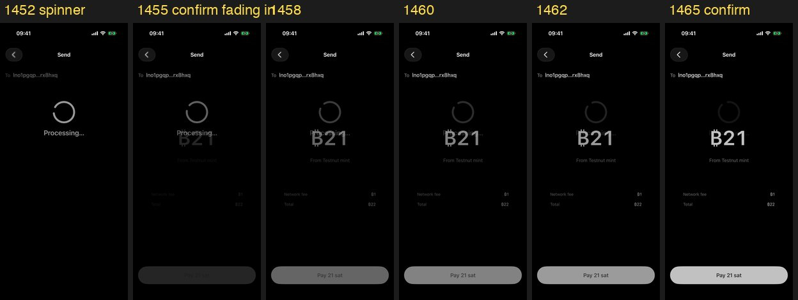
I3 · Create invoice keeps the chrome and fades to the invoice (iOS) Fixed
The toolbar method and unit buttons and the "To" row stay mounted while the request is created (disabled rather than
removed), so the amount no longer drops. The three quote landings in ReceiveLightningView apply the quote and
clear isCreatingRequest inside one withAnimation, so the keypad → invoice swap uses its transition.
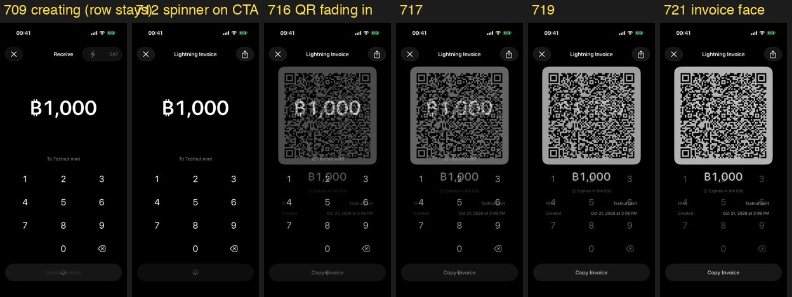
I4 · QR face fades out when the payment lands (iOS) Fixed
completeReceivedQuote now sets the paid flag, the monitor state and the wallet's received-payment notification
inside one withAnimation, and the quote refresh that precedes it is animated when it carries a settled payment.
Two attempts were needed: animating only isPaid still cut, because the notification the home screen observes
was posted in the same update outside the animation.
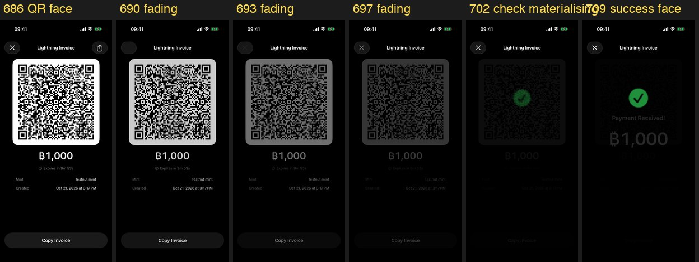
Left open
- A7 (scrim at full opacity on the first frame): Material 3's
ModalBottomSheetfades its scrim on its own clock; changing it means replacing the scrim. Low value for a one-frame effect. - I1 (iOS Send sheet dismissed and re-presented): deliberate in
UnifiedSendView("every locked destination leaves the compact input sheet and reopens in the dedicated large payment sheet", to avoid the detent + keyboard race). Keeping the sheet open and animating the step is a navigation-model change that should be decided on its own, not slipped into an animation pass. - I5 (mint list cut before the curtain) and I6 (mint detail rows reflow on load): cosmetic, not changed.
- A10: nothing to fix; emulator only.
Verification on this branch: Android unit tests (808, all passing), Compose screenshot validation and lint pass; the iOS unit target was run after the changes. The throwaway iOS capture test was restored, so no test files changed.
9. Second pass: ecash and transfer (2026-10-22)
Scope added: Send Ecash (generate a token, copy it, watch it get claimed), Receive → paste a token → the full-screen claim page → claimed, Receive Lightning through the mint picker, and the whole Transfer flow (entry, swap, Max, review, transfer, success, back) from PR #404, which this branch now builds on. Same method as before: Pixel 7a at 90 fps (release build), iPhone 17 Pro simulator at 60 fps, every recorded frame diffed, animated QR codes masked out of the diff. Tokens were claimed from a second wallet on the host so the "claimed" faces could be recorded live.
Every Android finding in this pass was recorded twice on the Pixel 7a: on the merged branch without the fixes ("before") and on the fixed build ("after"), with the same script, so the strips below are like for like. The first set of recordings was lost to a reboot; the strips are from the second set, whose numbers match the first.
Two mints are needed for Transfer. The release build refuses cleartext mint URLs, so the capture build carried a one-line,
uncommitted policy change that lets it add the local CDK test mint over adb reverse; everything else is the
branch as pushed. The simulator talks to the local mint directly.
Android
A12 · Send Ecash: the "Checking…" row is removed outright, the rows below hop up Low
- Repro
- Send → Ecash → 50 → Send. Leave the token face alone for about two minutes (ten polls), or let a poll fail.
- Observed
- When polling gives up, the spinner row under the amount disappears and "Unit / Mint" move up by its height in a single frame.
- Measured
- Rows move 96 px (36 dp) between two consecutive 90 fps frames.
- Cause
SendEcashScreen.kt:if (claimState == ClaimState.Checking) { ClaimStatusRow(…) }inside aspacedBycolumn; the row's ownAnimatedContentnever gets to run its exit because the row is dropped from composition.
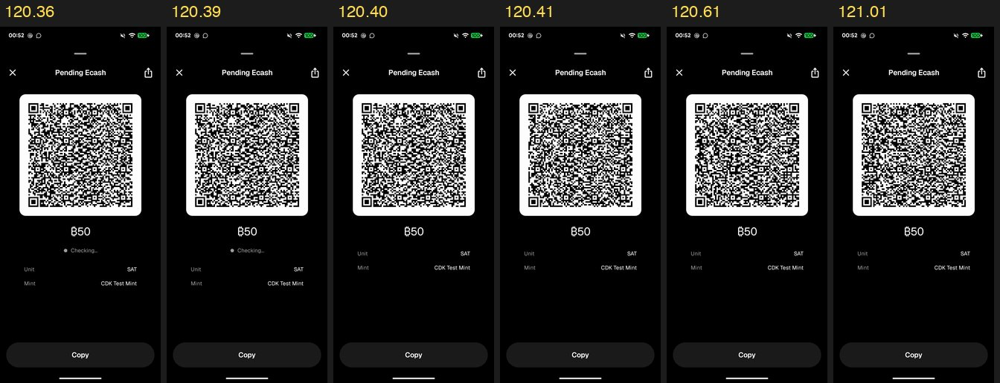
A13 · Receive: the compact sheet jumps to the top in one frame when the keyboard opens High
- Repro
- Home → Receive → tap "Paste a Cashu token".
- Observed
- The sheet goes from resting at the bottom to pinned under the status bar between two frames, before the keyboard has moved at all; the keyboard then slides up into the empty space over the next ~200 ms.
- Measured
- Title moves 760 px (290 dp) in one 90 fps frame; 11.7 % of pixels change in that frame, the keyboard's own frames follow at 4–5 % each.
- Cause
- Same mechanism as A1's keyboard case: Material's
ModalBottomSheetincludes the IME in its window insets and re-anchors to the new inset instantly, while the sheet content'simePadding()animates. The Send sheet got keyboard-blind insets in the first pass; the Receive sheet did not.
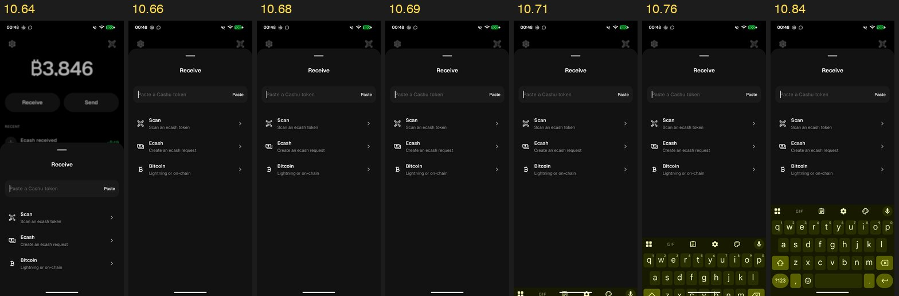
A14 · Receive: the token field grows a line at a time while typing Low
With a token being typed or pasted, each wrap adds a line to the field and the Scan/Ecash/Bitcoin rows below drop by that line in one frame. Pasting a four-line token is one such hop. Same shape as A5 on the Send sheet; the Receive column had no size animation.
A15 · Receive / Send: the keyboard outlives the sheet, then vanishes in one frame Medium
- Repro
- Home → Receive → type or paste a token so it routes to the claim page (Send → paste a token does the same).
- Observed
- The sheet slides away and the wallet home is visible with the keyboard still open for about 1.1 s; the keyboard then disappears between two frames at the moment the claim page starts to enter.
- Measured
- Keyboard removal: 19.4 % of pixels in one frame, 1.2 s after the sheet finished leaving.
- Cause
- The IME is attached to the sheet's window. Routing closes the sheet without resigning the field, so the keyboard stays until that window is torn down, which happens when the handoff completes and the claim overlay is mounted.
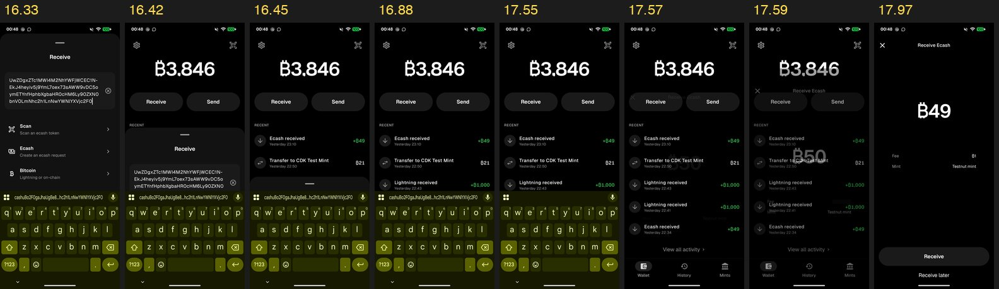
A16 · Transfer: the header chevron pops in and out Low
Continue swaps the sheet's FlowSheetTitle for a SheetHeader with a back chevron, and Back swaps it back. Both are composable swaps, so the chevron appears on the first frame of the forward transition and disappears on the first frame of the back transition, while the faces themselves cross-fade. The title does not move (both headers share the same metrics).
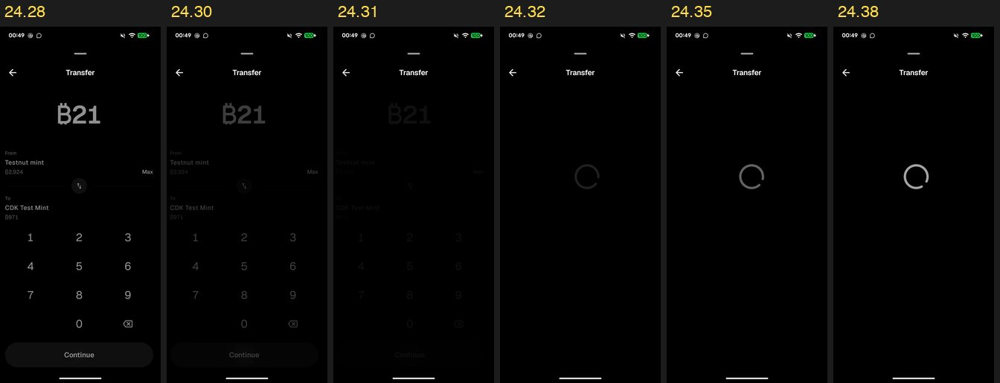
Transfer transitions that looked right (Pixel 7a): sheet open; swap (names and balances replace in place over ~5 frames, glyph half-turn); Max (amount and "Using Max" cross-fade over 4 frames); Continue → entry fades out, spinner, review fades in with its rows; Transfer → hero becomes spinner + "Transferring… / Leaving …" with the From/To/fee/Total rows held still; success morphs the spinner into the check, "Total" leaves, the amount takes the hero; Back → entry; close.
Also checked on the Pixel 7a, nothing to report: Receive → Ecash (new Cashu request page: the standard push transition in and out); Send → Tap (contactless face swap in and back); Send → Lightning address → amount face and back (the first pass's A1 fix holds with the field animation in place); Send → paste a token → claim page (same handoff as Receive, now keyboard-first).
Ecash transitions that looked right (Pixel 7a): Send → Ecash sheet swap; keypad → token face (fade-through, title cross-fades to "Pending Ecash"); Copy toast; claim page enter (slide + fade) and exit; "Claiming…" → "Payment Received!" (spinner morphs into the check in place); Receive → Bitcoin; mint picker open/pick; Create invoice → invoice face → paid face on the local mint.
iOS
I7 · Send Ecash: the token face lands as a single-frame cut High
- Repro
- Home → Send → Ecash → 50 → Send.
- Observed
- The keypad face is replaced by the full token face (card, amount, "Checking…", rows, Copy) between two frames; the QR then renders into the card over the following frames. The view declares a slide + fade for this swap.
- Measured
- 31 % of pixels in one frame at 60 fps, with still frames either side.
- Cause
WalletManager.sendTokensrefreshes the balance and history (published, unanimated) right before it returns; the view's landing writes (generatedTokenetc.) happen in the same run-loop pass, so even insidewithAnimationthe swap renders as a cut. The first attempt (wrapping the writes only) proved exactly that.
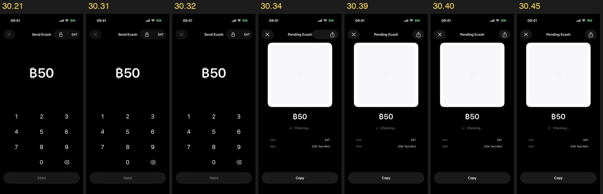
I8 · Send Ecash: the "Claimed" success lands as a cut Medium
When the recipient redeems the token, the token face is replaced by the full-screen success in one frame (24 % of pixels), for the same reason as I7: the claim check publishes wallet state in the same pass as tokenClaimed = true.
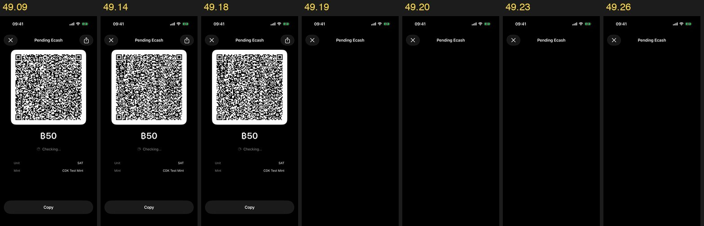
I9 · Receive Lightning: the invoice landing cuts again on the merged branch High
- Repro
- Home → Receive → Bitcoin → 1000 → Create invoice, on Testnut or on the local CDK mint.
- Observed
- Keypad → invoice face in one frame (22 % of pixels on Testnut, 24 % on the local mint), with still frames either side, in every second-pass run. The first pass had verified this landing as a 0.3 s fade on the same simulator. On the local mint, which pays within milliseconds, the paid face lands as a cut too (29 %); on Testnut it fades.
- Cause
createMintQuotereloads History (published, unanimated) right before it returns, exactly likesendTokensin I7. Whether the view's animated landing shares that run-loop pass depends on executor scheduling, which is why I3's fix held in one session and not in the next. The paid path has the same race with the status check's own publishes.
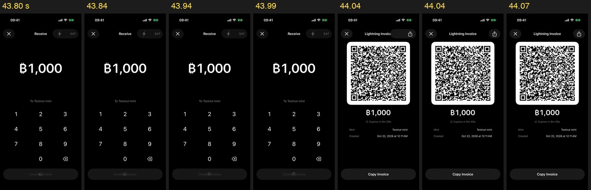
I11 · Receive Lightning: the QR greys out for one frame when the quote refreshes Low
While the invoice is showing, a status poll that replaces the quote object re-renders the QR: the modules flash dark grey for a single frame (12 % of pixels) and are black again in the next. Seen on the local mint (where the first poll already carries a changed quote); Testnut's unchanged quote does not re-render. QRCodeView generated a new UIImage on every body pass, and inside the animated refresh SwiftUI cross-dissolved the old and new images.
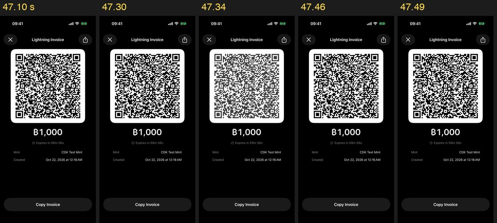
I12 · Send / Receive: the compact sheet steps to its new height on a multi-line paste Low
Pasting a four-line token into the compact Send (or Receive) sheet re-measures its content-fit detent and the sheet takes the new height in one frame (~27 pt, 6.7 % of pixels). The token then routes to the claim page within a second, so the step is brief. Wrapping the measured-height write in withAnimation was tried and measured: SwiftUI does not animate a changed .height detent value, only a selection change, so the change was reverted. Left open; the fix would be a two-detent selection or a manual height animation.
I10 · Mints: Add mint drops the keyboard in one frame Low
When the add completes, the keyboard disappears between two frames (17 % of pixels) while the sheet is still in place; the sheet then dismisses on its own. The field was never resigned, so the keyboard went with the sheet's window instead of animating down.
iOS transitions that looked right: Receive → Ecash (the Cashu Request page covers the sheet with a slide); Send → paste a token → sheet dismiss → claim page cover → Receive Later; Receive → Paste → sheet dismiss → claim page cover; claim page review rows; Receive → "Claiming…" → "Payment Received!" (check materialises over the spinner, amount and rows fade in); Done; Transfer sheet open, swap, Back → entry (chevron fades), close; Add mint sheet open; mint list update after adding; Receive → Bitcoin → mint picker → pick.
Fixes in this pass
A13, A14 · Receive sheet is keyboard-blind and its token field grows smoothly (Android) Fixed
WalletFlowHost excludes the IME from the sheet insets for the Receive flow as well as Send, so the sheet no
longer re-anchors when the keyboard appears; its content already pads for the keyboard and that padding animates with it.
For the wrap, animating the sheet column alone was not enough: the first fixed build eased the sheet's bottom edge while
the rows under the field still hopped a line (measured on the Pixel). The size animation now sits on the token field
itself (outermost in its modifier chain, in ReceiveEcashScreen and the same field in
UnifiedSendScreen), so the field's measured height eases and the rows below slide with it; the sheet column
keeps its own animation for the keyboard padding. On the fixed build the field tap reads as ~20 frames of 3–5 % change
with no single frame above 3.5 % (it was 8.3 % in one frame), and a wrap spreads over ~15 frames.
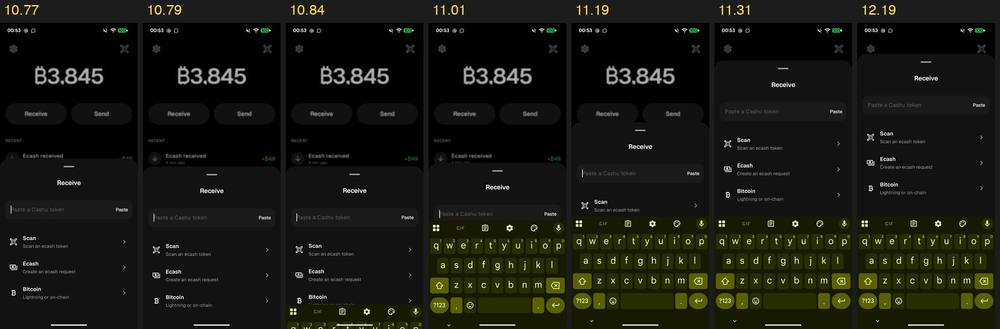
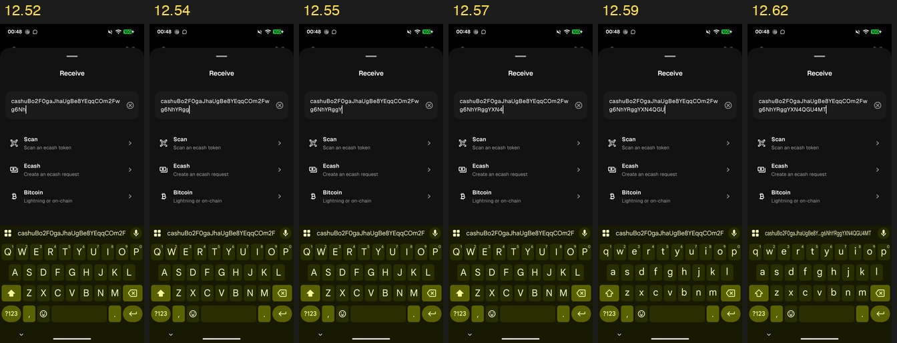
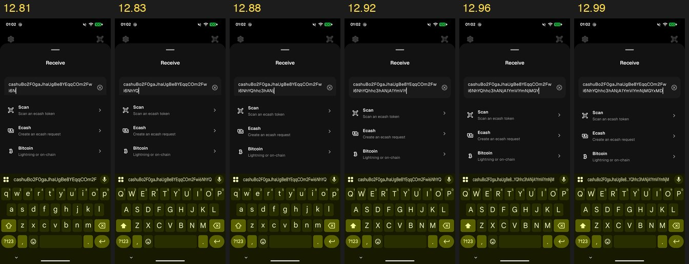
A15 · The keyboard leaves with the sheet (Android) Fixed
ReceiveEcashScreen.routeInput and UnifiedSendScreen.advance clear focus and hide the keyboard before
handing a token (or a payable) to the shell. The keyboard now slides down together with the sheet, and the claim page
enters over the plain home screen (fixed build: the sheet-and-keyboard exit spreads over 16.28–16.81 s with no frame
above 12 %, and the claim page enters 1.5 s later with 0.6 % frames; the 19 % keyboard cut is gone).
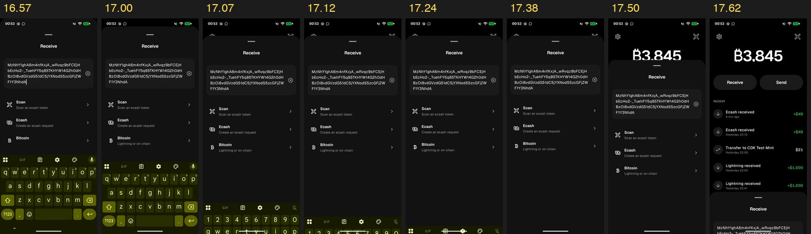
A12 · "Checking…" row grows in and shrinks away (Android) Fixed
The amount and its status row share one column; the row (with its own gap) sits in an AnimatedVisibility with
fade + vertical expand/shrink, so the rows below slide up over 220 ms when polling stops. Putting the gap inside the
animated block avoids the last-frame hop that spacedBy would otherwise add when the row leaves composition.
On the Pixel the removal now spreads over 119.41–119.58 s with no frame above 0.7 % (it was 0.65 % in a single frame).
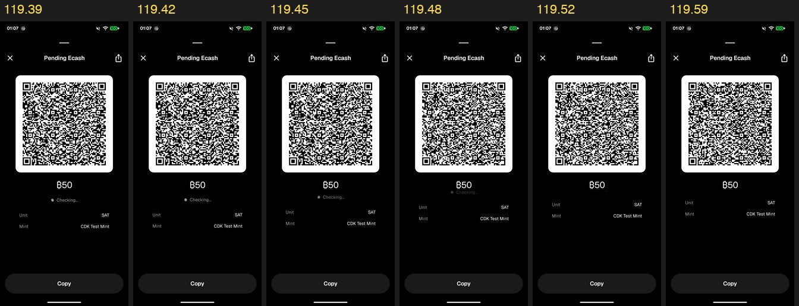
A16 · One Transfer header, chevron fades (Android) Fixed
MintTransferScreen keeps a single SheetHeader for both steps and passes the chevron only on the review step; SheetHeader animates its icon in and out, as it already did for Send.
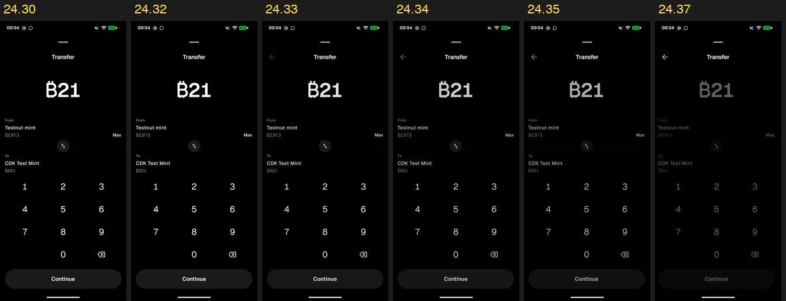
I7, I8 · Token face and "Claimed" face fade in (iOS) Fixed
Both landings now take a one-millisecond hop to the next run-loop pass before their withAnimation block, so the
wallet manager's own published changes render first and the face swap gets a transaction of its own. The landing's
flags (isGenerating, isCheckingClaim) are cleared inside the same animation; the manual
check's defer was replaced by explicit clears on each exit path for the same reason as I4.
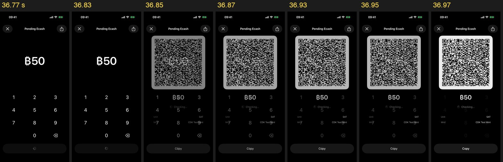
I9 · Invoice and paid landings get their own run-loop pass (iOS) Fixed
The three quote landings (BOLT11, BOLT12, on-chain), the settled status refresh and the abandoned on-chain path in
ReceiveLightningView now hop to the next run-loop pass (one millisecond) before their existing
withAnimation blocks, the same shape as I7. The cancellation guard is re-checked after the hop.
I11 · QR image cached per source string (iOS) Fixed
QRCodeView keeps the rendered image in state keyed on the string it encodes and only regenerates when that string changes, so re-renders hand SwiftUI the same image and nothing dissolves. Animated (multi-part) QRs still regenerate per part.
I10 · Add mint resigns the field before the sheet goes (iOS) Fixed
AddMintSheet sets its focus binding to false before calling onAdded, so the keyboard animates down with the sheet.
Left open in this pass
- I12 (iOS compact sheet steps on a multi-line paste): the detent height is not animatable as written; brief, and followed by the sheet leaving. The first pass's open items (A7, I1, I5, I6) stand.
Verification on this branch after the second pass: Android unit tests, Compose screenshot validation and lint pass on the merged branch with the fixes (re-run after the field animation); iOS unit target 893 tests, 871 passed, 0 failed, 22 skipped; every fix in this pass was re-captured on the Pixel 7a or the simulator. The throwaway iOS capture test was restored again, so no test files changed. Side finding, not a layout issue: the Android token face never reported the token as claimed although a second wallet redeemed it within a minute (iOS reported it in about six seconds); the claim probe is worth a look on its own.